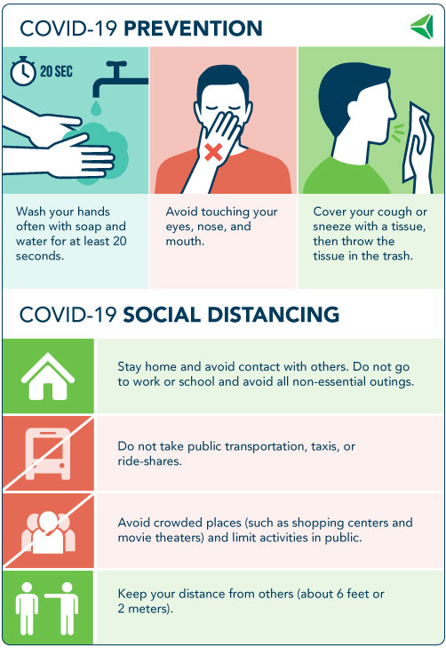

<h3>Essential Resources</h3>

<div class="mb-2" style="text-align:center">
<a href="https://www.promedica.org/Pages/COVID-19.aspx"></a>
<br/>(image is from <a href="https://www.promedica.org/Pages/COVID-19.aspx">ProMedica's COVID-19 FAQ</a>)
</div>

<hr />

<ul>
	<li>Ars Technica's Comprehensive Guide: <a href="https://arstechnica.com/science/2020/03/dont-panic-the-comprehensive-ars-technica-guide-to-the-coronavirus/">Don't Panic: The Comprehensive Ars Technica Guide to the Coronavirus</a></li>
	<li>CDC COVID-19 Guidelines: <a href="https://www.cdc.gov/coronavirus/2019-ncov/index.html">COVID-19 - What You Need to Know</a></li>
	<li><a href="https://www.cdc.gov/coronavirus/2019-ncov/community/home/index.html">CDC Guidelines for Households</a></li>
	<li><a href="https://www.youtube.com/user/CDCStreamingHealth/videos">CDC Youtube Videos</a></li>
	<li><a href="https://www.seriouseats.com/2020/03/food-safety-and-coronavirus-a-comprehensive-guide.html">Comprehensive food safety guide / General FAQ</a></li>
	<li>Incubation Period (PPN): <a href="https://www.pharmacypracticenews.com/Online-First/Article/03-20/COVID-19-Study-Estimates-5.1-Days-for-Incubation-Period/57609">COVID-19 Study Estimates 5.1 Days for Incubation Period</a></li>
	<li><a href="https://www.promedica.org/Pages/COVID-19.aspx">ProMedica's COVID-19 FAQ</a></li>
	<li>Parents' Guide (CMI): <a href="https://childmind.org/article/talking-to-kids-about-the-coronavirus/" >Talking to Kids About the Coronavirus | Child Mind Institute</a></li>
	<li>Red Cross Guide: <a href="https://www.redcross.org/about-us/news-and-events/news/2020/coronavirus-safety-and-readiness-tips-for-you.html" >Coronavirus: Safety and Readiness</a></li>
	<li>Virus Pathology &amp; Symptoms (USA Today): <a href="https://www.usatoday.com/in-depth/news/2020/03/13/what-coronavirus-does-body-covid-19-infection-process-symptoms/5009057002/" >What does the coronavirus do to your body? Everything to know about the infection process</a></li>
	<li>National Institutes of Health (NIH): <a href="https://www.nih.gov/news-events/news-releases/new-coronavirus-stable-hours-surfaces?fbclid=IwAR2drbXQEly7aB9XPH9ewDINDZwZdMyH9y2bsDhCxml-7whb4inmOk_sMAc">Coronavirus stable for hours to days on surfaces.</a></li>
	<li>Whitehouse.gov (National/Federal) Guidelines: <a href="https://www.whitehouse.gov/wp-content/uploads/2020/03/03.16.20_coronavirus-guidance_8.5x11_315PM.pdf" >Presidential Guidelines - 15 Days to Slow the Spread</a><br></li>
	<li><a href="https://gisanddata.maps.arcgis.com/apps/opsdashboard/index.html?fbclid=IwAR0l5jXtnWrHeJMkIVhKPgs6WJlLUKbOZUEqtKEDWljGeBDQLYIBD0BBsoI#/bda7594740fd40299423467b48e9ecf6">Global cases tracker by Johns Hopkins University (JHU)</a> (Thanks Daniel!)</li>
	<li><a href="https://www.reddit.com/r/canada/comments/fghd23/psa_regarding_covid19_a_warning/?utm_source=share&utm_medium=ios_app&utm_name=iossmf">Reddit thread: PSA Regarding COVID-19: A Warning</a></li>
	<li><a href="https://www.reddit.com/r/Coronavirus/comments/f513zm/nursing_101_caring_for_your_loved_ones_at_home/">Nursing 101: Caring for your loved ones at home</a></li>
	<li><a href="https://www.facebook.com/coronavirus_info/">Facebook's Coronavirus Information</a> - A great overview of the latest state of things and what we should do. This also has quick links to local recognized health organizations.</li>
	<li>Pandemic Timeline (CNBC): <a href="https://www.cnbc.com/2020/03/16/trump-admits-that-coronavirus-crisis-could-stretch-into-july-or-august.html">Trump Says Coronavirus Crisis Could Stretch into August, May Look at Lockdown for 'Certain Areas' (March 16, 2020)</a></li>

</ul>